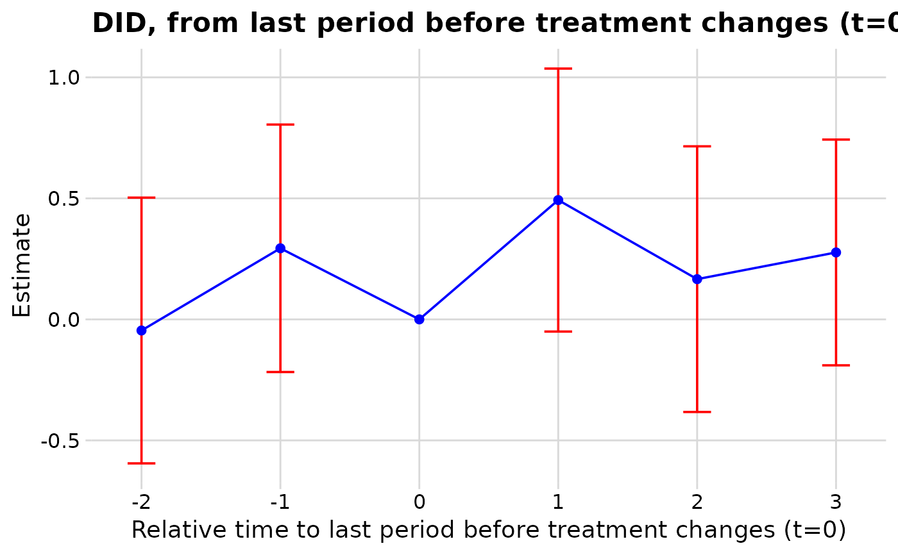

Coerce an estimator result to a tidy event-study tibble
Source:R/as_nabs_event_study.R, R/naive_twfe.R, R/tidy_dcdh.R, and 4 more
as_nabs_event_study.Rd`as_nabs_event_study()` is an S3 generic that converts the native output object of a supported estimator into the unified *nabs_event_study_tbl* schema used by [nabs_event_plot()]. Methods exist for objects of class `"did_multiplegt_dyn"` (from `DIDmultiplegtDYN`), `"PanelEstimate"` (from `PanelMatch`), `"fect"` (from `fect`), and `"fixest"` (from `fixest`, used for the naive TWFE reference series).
Usage
as_nabs_event_study(
x,
method = NULL,
outcome = NA_character_,
conf.level = 0.95,
...
)
# S3 method for class 'fixest'
as_nabs_event_study(
x,
method = NULL,
outcome = NA_character_,
conf.level = 0.95,
...
)
# S3 method for class 'did_multiplegt_dyn'
as_nabs_event_study(
x,
method = NULL,
outcome = NA_character_,
conf.level = 0.95,
...
)
# S3 method for class 'fect'
as_nabs_event_study(
x,
method = NULL,
outcome = NA_character_,
conf.level = 0.95,
...
)
# S3 method for class 'list'
as_nabs_event_study(
x,
method = NULL,
outcome = NA_character_,
conf.level = 0.95,
...
)
# S3 method for class 'nabs_event_study_result'
as_nabs_event_study(
x,
method = NULL,
outcome = NA_character_,
conf.level = 0.95,
...
)
# S3 method for class 'nabs_event_study_simple'
as_nabs_event_study(
x,
method = NULL,
outcome = NA_character_,
conf.level = 0.95,
...
)
# S3 method for class 'PanelEstimate'
as_nabs_event_study(
x,
method = NULL,
outcome = NA_character_,
conf.level = 0.95,
pre_obj = NULL,
add_reference = TRUE,
...
)Arguments
- x
A supported estimator object.
- method
Optional override for the `method` column. If `NULL`, the default for that estimator is used.
- outcome
Optional outcome name to record in the `outcome` column.
- conf.level
Confidence level for `conf.low` / `conf.high`. Default `0.95`. When the underlying object stores its own CI bounds (e.g. `fect`), those are used as-is and `conf.level` is recorded as metadata only.
- ...
Method-specific arguments. See the individual method files for details (e.g. `pre_obj` for the `PanelEstimate` method).
- pre_obj
A `placebo_test` result from `PanelMatch::placebo_test()`, used to fill in the pre-treatment portion of the path.
- add_reference
Logical; if `TRUE` (default) and `pre_obj` is given, adds a `(time = -1, estimate = 0)` row.
Value
A tibble of class `"nabs_event_study_tbl"` with one row per relative period and the columns documented in the package overview.
Details
A `data.frame` method is also provided as an escape hatch: it accepts any frame that already contains `time` and `estimate` columns and fills in the rest of the schema if missing.
## fixest method
Extracts coefficients on `time_to_event` interactions of the form `time_to_event::<k>` or `time_to_event::<k>:<interaction>`, the coefficient names produced by `fixest::i()`. These are treated as event-study *levels* (the classic absorbing-treatment parametrisation). Standard errors come from the model's clustered VCOV; confidence intervals use the normal approximation and `conf.level`.
Note that [naive_twfe()] does not fit this absorbing parametrisation itself – it uses a distributed-lag design in treatment levels – but this method is retained so that models you fit yourself with `fixest::i()` can still be tidied.
## fect method
`fect::fect()` returns event-study coordinates in `$time` and `$att`, with confidence-interval bounds in the two-column matrix `$att.bound`. Standard errors are pulled from `$est.att[, "S.E."]` when available; if the object was fit without `se = TRUE`, only the point estimates are returned and SE / CI columns are filled with `NA`.
The `method` label is auto-detected from `x$method`, the option that was passed to `fect::fect()`:
`"fe"` -> `"FE"` (two-way fixed-effects imputation; Borusyak-style)
`"ife"` -> `"IFE"` (interactive fixed effects; Bai 2009)
`"mc"` -> `"MC"` (matrix completion; Athey et al. 2021)
Pass an explicit `method` argument to override this auto-detected label.
## PanelMatch method
For `PanelMatch::PanelEstimate()` the post-treatment leads are stored as `$estimate` / `$standard.error` (singular). The pre-treatment placebo results from `PanelMatch::placebo_test()` use `$estimates` / `$standard.errors` (plural). To produce a single event-study path, pass the placebo object via `pre_obj`:
pm <- PanelMatch::PanelMatch(...)
pe <- PanelMatch::PanelEstimate(pm, panel.data = pd)
pl <- PanelMatch::placebo_test(pm, panel.data = pd, plot = FALSE)
tidy <- as_nabs_event_study(pe, pre_obj = pl)A `time = -1` reference point with `estimate = 0` is inserted so that the event-study path is anchored at t = -1, matching common practice and the `did` / `fixest::iplot` convention. Disable with `add_reference = FALSE`.
Examples
# The data.frame escape hatch needs no estimator packages: pass a frame
# that already has `time` and `estimate`; the remaining schema columns
# (including CIs derived from `std.error`) are filled in automatically.
raw <- data.frame(
time = -3:4,
estimate = c(-0.05, 0.01, 0.00, 0.02, 0.30, 0.42, 0.38, 0.50),
std.error = 0.12
)
tidy_fit <- as_nabs_event_study(raw, method = "DCDH", outcome = "y")
# With the DCDH estimator installed, coerce its native object directly.
if (requireNamespace("DIDmultiplegtDYN", quietly = TRUE) &&
requireNamespace("polars", quietly = TRUE)) {
set.seed(1)
library(polars)
panel <- expand.grid(id = 1:60, t = 1:10)
panel$d <- with(panel, as.integer(
(id %% 4 == 1 & t %in% 4:7) |
(id %% 4 == 2 & t %in% 5:8) |
(id %% 4 == 3 & t %in% 6:9)
))
panel$y <- 0.2 * panel$t + 0.5 * panel$d + rnorm(nrow(panel))
fit <- DIDmultiplegtDYN::did_multiplegt_dyn(
df = panel,
outcome = "y",
group = "id",
time = "t",
treatment = "d",
effects = 3,
placebo = 2
)
as_nabs_event_study(fit, outcome = "y")
}

#> # <nabs_event_study_tbl>: 6 rows, methods: "DCDH"
#> # A tibble: 6 × 8
#> time estimate std.error conf.low conf.high window method outcome
#> <int> <dbl> <dbl> <dbl> <dbl> <chr> <chr> <chr>
#> 1 -3 -0.0459 NA -0.595 0.503 pre DCDH y
#> 2 -2 0.294 NA -0.217 0.805 pre DCDH y
#> 3 -1 0 NA 0 0 pre DCDH y
#> 4 0 0.493 NA -0.0503 1.04 post DCDH y
#> 5 1 0.166 NA -0.383 0.715 post DCDH y
#> 6 2 0.277 NA -0.190 0.743 post DCDH y